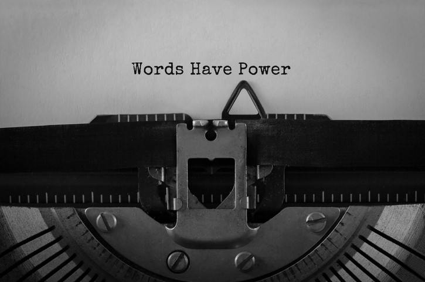

The Society for Practical Utopians
Working together to shape a brighter future for humanity
The Written Word in the 21st Century
By Herb Bowie
tags: written word

One of the Practopian Core Principles states that:
We place great value on the written word, including many works of philosophy and literature, but place no faith in any single text that we deem to be sacred.
If we are sincere in our belief in evolution, and particularly in ongoing human cultural evolution, then it will be hard to put our unbounded faith in any single, unchanging human artifact.
At the same time, we realize that many texts, both religious and secular, contain important messages that resonate with many of us, and we respect and appreciate these works.
Whether we are talking about the King James Bible, The Catcher in the Rye, On the Origin of Species, or Wikipedia, we recognize that writing things down is an important means of preserving human knowledge and wisdom, and that both writing and reading are invaluable human activities.
Author Carl Sagan made a compelling case for the importance of the written word in his own book, The Demon-Haunted World: Science as a Candle in the Dark, calling it “the great invention”:
For 99 percent of the tenure of humans on earth, nobody could read or write. The great invention had not yet been made. Except for firsthand experience, almost everything we knew was passed on by word of mouth. As in the children’s game “Telephone,” over tens and hundreds of generations, information would slowly be distorted and lost.
Books changed all that. Books, purchasable at low cost, permit us to interrogate the past with high accuracy; to tap the wisdom of our species; to understand the point of view of others, and not just those in power; to contemplate – with the best teachers – the insights, painfully extracted from Nature, of the greatest minds that ever were, drawn from the entire planet and from all of our history. They allow people long dead to talk inside our heads. Books can accompany us everywhere. Books are patient where we are slow to understand, allow us to go over the hard parts as many times as we wish, and are never critical of our lapses.
Books are key to understanding the world and participating in a democratic society.
Current Trends
Given this context, I’d like to make a few comments on some of the current trends affecting the state of the written word today.
Video: We are besieged today by video productions. On television, we have hundreds of channels that broadcast 24 hours a day. We have millions of YouTube videos. Arguably some of these things teach somebody something. But, overall, are they making us smarter? Or dumber? I tend to think the latter. I tend to think that reading a good book enhances our ability to parse new ideas and make sense of unfamiliar concepts. For me, reading a good book does for my mind what going to the gym does for my body. There are certainly some films that have a similar effect, that make me think. In general, though, I find that videos are an easy way to allow someone else to do my thinking for me. It’s a bit like watching an exercise video while reclining on the sofa. It’s not the same thing as going to the gym.
Advertising: One of the great things about books is that they do not include any advertising – other than, perhaps, a few pages at the beginning or the end listing other books by the same author, or from the same publisher. What a treat to be able to read without interruptions or distractions! What a joy to be able to concentrate on the information and ideas that one author has worked so hard to convey. What a luxury to be able to dive into text thick with complex ideas, and be free to work my way through it at my own pace. Advertising, that is so omnipresent in other media, and especially on the Web, continually robs us of these benefits.
Social Media: Isn’t it interesting that our most popular social media platforms, such as Twitter and Facebook, started out with a focus on words, and have gradually shifted to a focus on images? It’s hardly worth posting something these days if it’s not accompanied by a picture or a video – who will ever read it? And unless you have something to say that can be compressed and captured in a catchy graphic meme, it’s hardly worth saying. In many ways, the concern over fake news being spread by these platforms is a bit of a distraction from what should be our main concern, which is the systemic dumbing down of most of the conversations being facilitated by these media channels.
The Race to Capture the Most Attention: It is unfortunate that most voices in our culture today are driven primarily by the desire to capture the attention of as many people as possible, as quickly as possible, for as long as possible. It is unfortunate because this changes the nature of the writing, the subject of the writing, and the presentation of the writing. It results inevitably in a drive to appeal to the lowest common denominator of the audience – which seems to get lower every day. Search the Web for tips on how to write for the Web, and you will find thousands of pages all telling you, in so many words, to dumb down your content. There is only one problem here: if you continually make your content dumber, how will you ever hope to make your audience smarter?
Web Publishing Failures of Imagination: The early days of the Web were days of experimentation. At this stage the Web, much like the early days of the earth according to Genesis, “was a formless void.” Early Web authors were free to format their writings in any way that suited them, and to have pages link to one another following any scheme they might imagine. This resulted in a lot of bad websites, but also in a lot of creative, useful, new ways to organize written content.
Then came blogging. And while this resulted in a number of great blogs publishing remarkable, worthwhile content, it led to the creation of blogging software. And blogging software led web authors to think that the only way to publish and organize written content was to publish one new, short piece after another, and that the only way to organize this content was to show readers the newest piece first, followed in chronological order by progressively older pieces. Which is ok, if all you want to do is blog. But if you want to organize shorter pages into something that is more than the sum of its parts (something like a book), then you will generally feel like you are swimming against the current of the modern Web, and will not find a whole lot of help or support for more creative approaches to organizing your content.
And so, in summary, many modern trends concerning words, writers and readers are not tremendously helpful.
What We’re Doing at Practopians
Since these points might not otherwise be obvious, let me just take a few moments to list the ways in which we here at Practopians are doing all we can to buck these current trends.
- No advertising.
- No paywalls or fees.
- No pop-ups asking you to subscribe to anything.
- No cookies or tracking of your personal information.
- Permissive copyright, under the terms of this Creative Commons license, allowing anyone to share and adapt our content, so long as they provide attribution, and publish their own works under the same liberal terms.
- Challenging material: We want you to be smarter after reading our stuff. We won’t talk down to you.
- Quotations from a host of worthwhile authors, almost always with references to the books or other sources from which the words were taken.
- Minimal use of social media: if you’d like to keep up with what we’re doing, the best ways are to regularly visit our website, subscribe to our old-school RSS feed, or sign up for our email publication, which comes out every week or two.
- Deep site organization: Sure, we have a page showing the latest original posts in descending order by date – but that’s not our landing page. And we have different types of content, starting with core beliefs, proceeding to Basic Info, and then to Blog Posts, allowing readers to start with simple statements, and then proceed to deeper information and opinions. But material is also carefully organized by topic, or tag, with links appearing on the right side of nearly every page of our site.
In general, here at Practopians.org, we’re trying to present our content with all the benefits of a traditional book, while adding some valuable advantages available with the Web: low-cost publishing, easy updates, and a tiered organization to the materials, starting shallow, and then proceeding gradually to deeper treatments of important topics.
What We Can All Do
Not wanting to encourage simple gnashing of teeth, or to merely plug our own work here at Practopians, let me conclude by suggesting a few concrete things you can do to help buck these same trends.
- Provide financial support to organizations that supply you with words worth reading, starting with Wikipedia, and continuing with your most trusted newspapers and magazines.
- Support your local independent bookstore. I use Amazon all the time, but I also make a point of stopping by my local bookstore every once in a while and purchasing a book there.
- Support your local public library and your librarians.
- Read something new and challenging. At least “new to you”.
- Support organizations like Page Ahead that provide books to children in need.
If you think you can’t afford to provide financial support to these sorts of organizations, then remember the words of Desiderius Erasmus, who wrote to a friend in 1500, saying:
When I get a little money I buy books; and if any is left I buy food and clothes.
Published 2018 Nov 12
Tags
 Content at Practopians.org is Copyright © 2009 - 2018 by Herb Bowie except where otherwise noted
Content at Practopians.org is Copyright © 2009 - 2018 by Herb Bowie except where otherwise noted